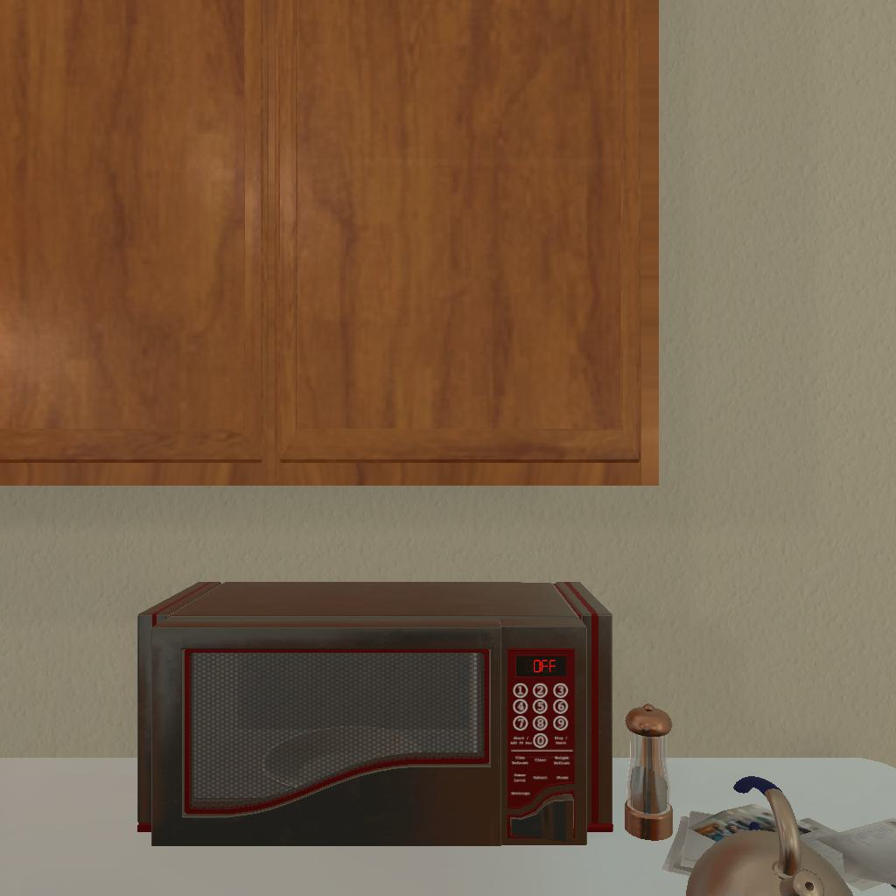

---------------------------------------------------------task: 24---------------------------------------------------------
--------------------------------------------------------------------------------------------------------------------------------------------------------------------
--------------------------------------------------------------------------------------------------------------------------------------------------------------------
Step:--------------------------------------------------------------------------18-------------------------------------------------------------------------------
----------------------------------------
VLM Prompt:
Image1:
Image2:
Image3:
**Instruction**
1. Analyze the provided images to identify all visible household objects and compare the difference between images (e.h. whether the object is opened or not and taken on hand or not), focusing on those relevant to the task description "heat some tomato and put it in fridge."
2. Use the analysis of images and the task hint "The agent must find an object of the desired type, pick it up, go to a microwave, heat the object with the microwave, then find the correct location to place it, and put it down there. The agent does not need to use the microwave button or open the microwave to heat the object, and the agent just needs to do action that is "heat the object with the microwave"." to answer the question: what is the most reasonable action in the choices for the task description "heat some tomato and put it in fridge"?
3. Decide and write the answer using the template: The answer is: (i): , where i is the real number. If there is no desired object in images, search every place based on **Initial Observation** to find the object. And if no one is exactly correct, choose a similar answer.
**Initial Observation**
You are in the middle of a room. Looking quickly around you, you can see cabinet (1-14), countertop (1-2), microwave (1), drawer (1-5), sink (1), sinkbasin (1), coffeemachine (1), stoveburner (1-4), toaster (1), fridge (1), diningtable (1), garbagecan (1), safe (1)
**Answer Choices**
(1): go to cabinet 3
(2): go to countertop 1
(3): go to cabinet 4
(4): go to cabinet 5
(5): go to cabinet 6
(6): go to drawer 1
(7): go to drawer 2
(8): go to drawer 3
(9): go to cabinet 7
(10): go to cabinet 8
(11): go to sink 1
(12): go to sinkbasin 1
(13): go to coffeemachine 1
(14): go to cabinet 9
(15): go to cabinet 10
(16): go to drawer 4
(17): go to cabinet 11
(18): go to stoveburner 1
(19): go to stoveburner 2
(20): go to stoveburner 3
(21): go to stoveburner 4
(22): go to cabinet 12
(23): go to toaster 1
(24): go to drawer 5
(25): go to countertop 2
(26): go to fridge 1
(27): go to cabinet 13
(28): go to cabinet 14
(29): go to diningtable 1
(30): go to garbagecan 1
(31): go to safe 1
(32): open cabinet 2
(33): close cabinet 2
(34): examine cabinet 2
**Answer**
Let's think step by step by following the instructions.
----------------------------------------
----------------------------------------
Original Response:
First, we need to find a tomato to heat. From the initial observation, we know there are multiple cabinets and drawers where the tomato could be stored. The images provided show a microwave and a cabinet above it.
Image 1 shows the microwave (closed) on the countertop 1 and the cabinet 2 above it also closed. Image 2 shows the cabinet 2 opened, but we cannot see inside it from the angle provided. Image 3 shows the cabinet 2 closed again.
Since the task is to heat some tomato, we need to find the tomato first. The images do not show any tomato on the countertop or inside the cabinet 2 when it was open. Therefore, we need to search for the tomato in the other cabinets or drawers.
The most reasonable next action would be to continue searching for the tomato by examining or opening other cabinets or drawers. The answer choices do not include actions like "search cabinet" or "search drawer," but they do include actions to go to various cabinets and drawers.
Since the tomato is not in cabinet 2, we can eliminate choices (32), (33), and (34). We know it is also not on countertop 1, so we can eliminate choice (2). We also know that the microwave is on countertop 1 and can assume that the agent knows how to use it without specifying the action to heat the tomato.
With the information provided, the most reasonable action would be to search the nearest cabinets and drawers for the tomato. Since we don't have any specific information on where the tomato is, we should choose a cabinet or drawer close to the microwave for efficiency.
Choice (3): go to cabinet 4 seems to be the nearest next cabinet to check, making it the most reasonable next action to find the tomato.
The answer is: (3): go to cabinet 4.
----------------------------------------
----------------------------------------
>>> Refine Original VLM Response and Get Pure Action: go to cabinet 4
----------------------------------------
-----------------------------------------------------------------
Running time: 13.757455348968506 seconds
Total Money: 15.2927
-----------------------------------------------------------------
-----------------------------------------------------------------
Text Observation:You arrive at loc 4. The cabinet 4 is closed.
-----------------------------------------------------------------
UNSUCCEED